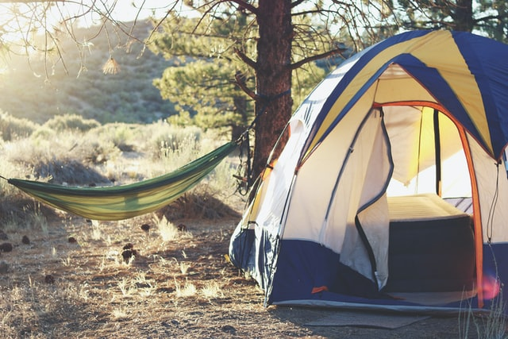
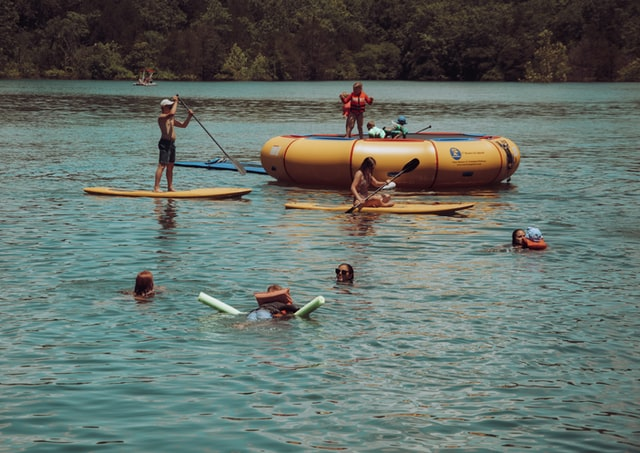
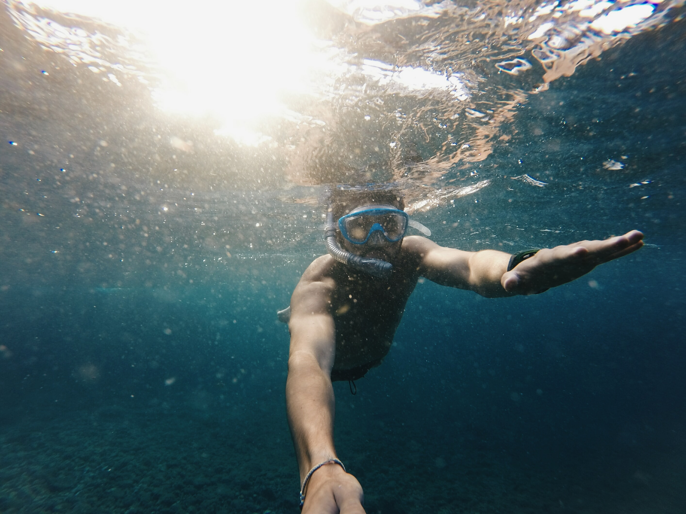

According to state geologists, Florida springs were formed some 20-25 million years ago.
Wakulla Springs is the largest and deepest freshwater spring in the world. The spring is also home to Florida's deepest and most extensive underwater cave system.
They provide a natural habitat for wildlife and plants. Spring vents are windows into the aquifer, which is the major source of floridans drinking water.
The technical name for this porous limestone that underlines the Florida peninsula – in some spots thousands of feet thick – is the Floridan aquifer. Tens of thousands of years ago, when the Florida landmass emerged from the sea, the lime rock "trapped" the sea water.
The exposed limestone collects freshwater, and below this freshwater lens, the rock holds saltwater. Over the years, the rains and freshwater began to form tunnels and cavities, collecting in what would become a giant reservoir. In some areas, where the crust is thin, the water bubbles to the surface.
The result is more than 600 freshwater springs. Some are small and barely noticeable, really – while others are large enough to pump out millions of gallons of water a day, enough to feed a major river. Early humans gathered by the springs where they fed on mastodon, mammoth, ground sloth, giant armadillo and beaver. Today, divers sometimes find bones and teeth, as well as stone-age tools, from this forgotten age.
While some springs are privately owned, Florida has 15 state parks that preserve and protect the public access to the aquifer.In Northwest Florida, Ponce de Leon State Park has a main spring that produces 14 million gallons of invigorating 68-degree water every day. A dip in this “fountain of youth” is guaranteed to at least make you feel a few years younger.
Near the towns of Suwannee and Fanning, Fanning Springs State Park, a hub of the Suwannee River Wilderness Trail, is often visited by manatees which swim in all the way from the coast to take advantage of the year-round 72-degree water. Fanning Springs is also a favorite swimming hole for locals enchanted by the allure of the deep blue water.
Wes Skiles Peacock Springs State Park, located about 16 miles from Live Oak, the cave diving capital of the world, has two main springs, a spring run, and six sinkholes, all maintained in their natural condition. With more than 28,000 feet of underwater passes, one of the longest cave systems in the continental United States, this state park is a gathering place for underwater explorers.
There are way too many springs to list them all! My personal favorites are listed in the header of this page. To explore all of the springs in Florida visit the State Parks website!
One of Florida's largest, deepest and most famous springs (thanks to a National Geographic expedition a few years ago) is Edward Ball Wakulla Springs State Park, south of Tallahassee. With swimming platforms and a dive tower, the park is a popular swimming spot. Visitors can also board at the park for a boat tour of the Wakulla River.
Wakulla Spring is located in a region known as the Woodville Karst Plain because the area contains numerous springs, sinkholes and submerged cave systems formed by the dissolving of limestone over thousands to millions of years. The extensive cave system beneath Wakulla Spring extends more than 32 miles and serves as a network of conduits that supply the more than 250 million gallons of water per day that discharges from the spring. Flow from the spring could fill an Olympic swimming pool every few minutes!
The water flowing from Wakulla Spring emerges from the Upper Floridan Aquifer. This aquifer is part of an extensive aquifer system, called the Floridan aquifer system, that underlies the southern portions of South Carolina, Georgia and Alabama as well as the entire state of Florida.
$3 State Park Admission per vehicle for 1-2 people; $5 per vehicle for 3-8 people; and $1 for additional person/walk-ins/motorcycles/bikes. No pets and no alcohol. Tent and RV camping are available at this park.
$2 State Park Admission Fee per person. Children under 6 admitted free.Contact Guest Services at 833-945-2925 for tube rental and shuttle fees. There are four covered pavilions available on a first-come, first-served basis.
Monday - Friday: $15.00/person Saturday, Sunday, & Holidays: $22.00/person *Admission fee does not include mask, snorkel, and fins which are required!
